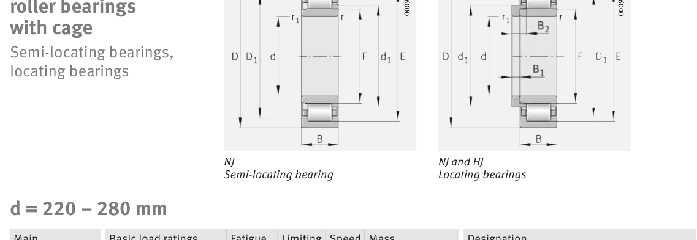

Original catalogue drawing - FAG Schaeffler HR 1, page 476

Scanned from the manufacturer catalogue page listing this part number. All part numbers printed on that table share the same drawing.
Scale cross-section
Blue = inner / outer ring, yellow = rolling element. Drawn to scale from this part's own
dimensions for selection reference only - not a manufacturing or assembly drawing.
Dimension table (mm / inch)
Symbol
Dimension
mm
inch
d
Bore diameter
240
9.4488
D
Outside diameter
500
19.685
B
Inner-ring / bearing width
95
3.7402
r
Chamfer (min)
5
0.1969
F
Roller-set bore dia.
306
12.0472
Notes
Weights are given in kg. Load ratings are shown in both the original catalogue units and the converted value (1 N = 0.2248 lbf). Data is provided for selection reference only - confirm against the latest official catalogue before ordering.
Main dimensions
Bore d (mm)
240
Outside dia. D (mm)
500
Width B (mm)
95
Inner-ring OD d1 (mm)
333.2
Inner-ring shoulder dia. D1 (mm)
414.8
Dimension F (mm)
306
Dimension s (mm)
7.4
Load ratings & speeds
Basic dynamic load rating Cr (lbs)
386671
Basic static load rating Cor (lbs)
512564
Basic dynamic load rating Cr (N)
1.72e+06
Basic static load rating C0r (N)
2.28e+06
Fatigue limit load Cur (N)
234000
Limiting speed nG (rpm)
1,980
Reference speed nB (rpm)
1,000
Weight
Weight (kg)
97.0
Mounting dimensions (fillets / shoulders)
Housing fillet r max (mm)
5
Chamfer r1 min (mm)
5
Shaft shoulder da (mm)
260
Shaft shoulder dc (mm)
335
Housing shoulder Da (mm)
480
Housing fillet ra max (mm)
4
Bearing life (ISO 281 basic rating life)
C / P
Equivalent load P (N)
L10 (106 rev)
L10h at 600 rpm
4
430,000
102
2,822
6
286,667
392
10,903
8
215,000
1,024
28,444
10
172,000
2,154
59,845
15
114,667
8,323
231,207
Basic rating life per ISO 281: L10 = (C/P)10/3 with C = 1,720,000 N. Hours = L10 x 106 / (60n). Life-modification factors for lubrication, contamination and temperature (aISO) are not included.
Source & traceability
Brand
FAG
Source catalogue
FAG / Schaeffler Rolling Bearings HR 1
Catalogue page
p.476 (dimensions)
Load ratings in newtons, fatigue limit load Cur, limiting speed nG and reference speed nB.
Send us the quantity you need and we will come back with price and
lead time, normally within 24 hours. Equivalent parts from other brands can be quoted at the same time.